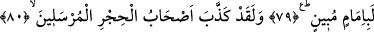

HİCR VE EYKE HALKI
78. Eyke halkı da gerçekten zalim idiler.
79. Biz onlardan da intikam aldık. İkisi de (Eyke ve Medyen) açık bir yol
üzerindedir.
80. Andolsun, Hicr halkı da peygamberleri yalanlamıştı.
81. Biz onlara mucizelerimizi vermiştik; fakat onlardan yüz çevirmişlerdi.
82. Onlar, dağlardan emniyet içinde kalacakları evler oyarlardı.
83. Onları da sabaha çıkarlarken o korkunç ses yakaladı.
84. Kazanmakta oldukları şeyler onlardan hiçbir zararı savmadı.
Şuayb (a.s.)’ın kavmi olan “Eyke halkı da gerçekten zâlim idiler.” haddi aşmış
kimselerdi.” Eyke, çok sayıdaki sık ve sarmaşık ağaçlara denir. Bu kavmin bulunduğu
yerde daha çok mukl ağacı (hurmaya benzer bir ağaç) bulunurdu. el-Kâmus’ta der ki:
“el-Mukl el-Mekkî, (Arabistan ve Yemen’de bulunan) devm ağacının meyvesidir. Şuayb
kavmi, bu ağaçların bulunduğu bölgede yerleşmişti. Allah, Şuayb (a.s.)’ı Medyenliler’e
gönderdiği gibi bunlara da peygamber olarak göndermiştir.”
Bazılarına göre ise Medyen ile Eyke birdir. Çünkü Eyke, Medyen’in yanındadır. Daha
doğru görüş de budur. Ebu’l-Leys Tefsîri’nde böyle geçmektedir.
Cevherî der ki: “İfâdeyi “ashâbu’l-eyke” şeklinde okuyana göre ‘el-eyke’, ağacı sık
ve bol yer anlamındadır. “Ashâbu’l-eyke” şeklinde ki okuyana göre ise o kasabanın
adıdır.”
79. Biz onlardan da intikam aldık. İkisi de (Eyke ve Medyen) açık bir yol
üzerindedir.